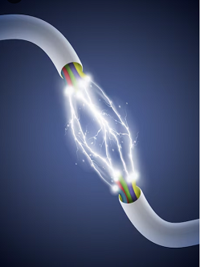
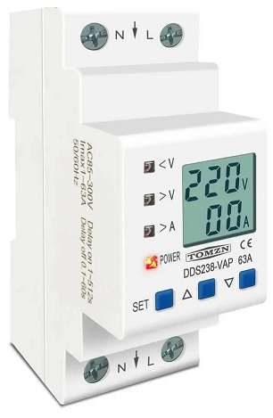
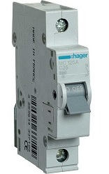
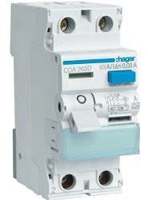
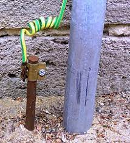
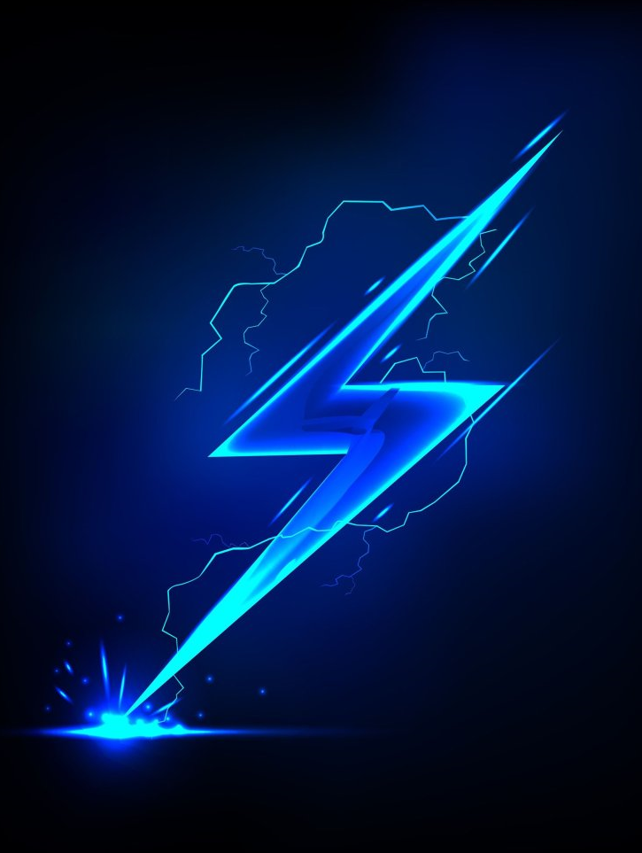

Базовые принципы организации электроснабжения в квартире / доме

- Уходят в прошлое те времена :
- - когда на всю квартиру было всего 2 "пробки" (автоматические или с плавкими вставками),
- - проводка была алюминиевой, которая легко ломалась и хорошо горела при возникновении замыканий и плохого контакта,
- - розетки были объединены с освещением,
- - разветвления были выполнены в распредкоробках, до которых невозможно было добраться,
- - о заземлении никто и не слышал, проводка была 2-х проводной.
Вместо предисловия
Теперь в каждой современной квартире достаточно мощных электроприборов. Соответственно, изменились требования к организации домашней электрической сети, в которой не комфорт, а именно безопасность человека должна стоять на 1-м месте!
Поэтому ниже мы рассмотрим основные принципы построения этой самой домашней электросети

- Для этого на входе, как правило, после вводного автомата устанавливается реле напряжения.
- Наиболее опасным режимом является обрыв нуля, когда напряжение с фазного 220В резко вырастает до линейного 380В. При таком скачке может выйти из строя вся бытовая техника и освещение!
- Менее опасными режимами являются :
- - превышение верхнего уровня напряжения в 255В. Наиболее чувствительные к этому холодильник, стиральная и посудомоечная машина, также кондиционер
- - понижение нижнего уровня напряжения менее 180В. Наиболее чувствительные к этому холодильник, стиральная и посудомоечная машина
- Также напряжение может непредсказуемо измениться вследствие ракетного удара по сетям распределения электроэнергии! Более подробно...
Защита по напряжению

- Для этого на входе, обычно после счетчика, устанавливается вводной автоматический выключатель с номиналом, соответствующим отведенной мощности квартиры. Сечение вводного провода должно соответствовать данной отведенной мощности.
- На каждую отходящую линию, в квартире, устанавливается отдельный автомат :
- - варочная электрическая поверхность - не более 40А
- - розеточные группы - не более 16А
- - группы освещения - не более 10А
- В домашней сети используются преиимущественно автоматы с характеристикой типа С, реже - В! Более подробно...
Защита по току

- Реализована при помощи, как правило, 2-х ступенчатой защиты :
- - вводное групповое УЗО или дифавтомат с током утечки 30 мА
- - рекомендуется установка УЗО в цепи питания электрической варочной поверхности с током утечки 10 или 30 мА
- - УЗО на отдельные потребители номиналом 10 мА (стиралка, бойлер, посудомойка - все, что связано с водой)
- Рекомендуется использование УЗО электромеханического типа, которое не требует питания!
- Допустимо использование УЗО типа А (переменный и пульсирующий ток) и АС (переменный ток) Более подробно...
Защита человека от поражения током
- дифференциальная защита

- Реализовано за счет подключения заземляющего контакта розеток к заземлению, что обеспечивает подключение металлических корпусов потребителей бытовой техники к заземлению. В многоквартирных домах в качестве заземления можно использовать арматуру стен. Предварительно желательно проверить качество данного заземления, включив между фазой и землей, нагрузку не менее 100 Вт, измеряя при это напряжение между указанными выводами. Напряжение не должно отличаться от сетевого более чем на 5%. Заземлению подлежат все электроприборы, имеющие металлический корпус :
- - варочная поверхность;
- - электрическая духовка;
- - бойлер;
- - посудомоечная машина;
- - стиралка;
- - холодильник;
- - электрочайник;
- - микроволновка; Более подробно...
- заземление

- - после счетчика должен быть установлен вводной двухполюсный автомат, если сеть однофазная, или 3-х или 4-х полюсный, если сеть трехфазная. Разрыв нулевого вводного провода необязателен, но если предусмотрено его отключение вводным автоматом, то только совместно с фазным(и) проводами
- - линия питания варочной поверхности может быть проложена проводом 5х2.5 (если в квартире 3 фазы), или 3х4 (мощность до 6 кВт), в отдельных случаях 3х6 (мощность до 8 кВт)
- - розеточные линии должны прокладываться проводом 3х2.5, и защищаться автоматом С16
- - линии освещения должны прокладываться проводом 3х1.5, и защищаться автоматом С10 или С6. Для комфорта лучше сделать 2 группы освещения, чтобы в случае повреждения одного светильника не пришлось отключать освещение везде
- - каждый потребитель или группа потребителей должны подключаться к вводному щитку при помощи отдельных линий, без промежуточных соединений и распредкоробок
- - мощные потребители (бойлер, стиралка, посудомойка, духовка, электрическая варочная поверхность) должны подключаться отдельными линиями
- - все потребители, связанные с водой (бойлер, стиралка, посудомойка) обязательно должны быть защищены либо индивидуальным УЗО 10 мА или хотя бы групповым УЗО 30 мА, 63А, установленным на входе питания группы данных потребителей
- - материал проводов - предпочтительно медь! Но в отдельных случаях допускается алюминий, но только в крайних! Более подробно...
Общие правила организации электропроводки
